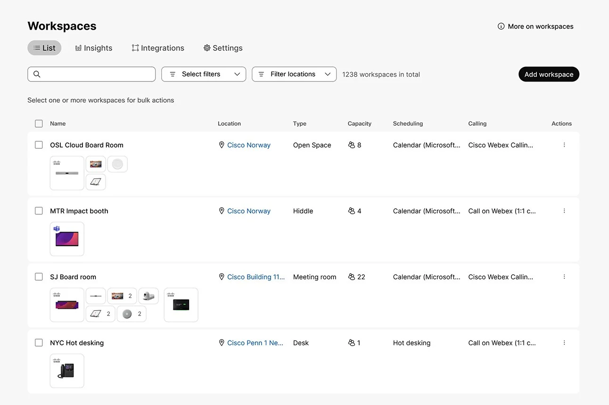

Cisco Control Hub
My role
Design lead, team of three
Unified device and workspace experience
AI direction for admins
Challenge
Admins managed rooms and devices across separate pages and tools.
Every task, from setup to diagnostics, meant piecing things together.
How might we turn a device lifecycle into one connected experience?
One lifecycle
01. Plan and buy
Know what each room needs before a single device arrives.
02. Provision
Set devices up remotely and in bulk, before they come online.
03. Troubleshoot
See whether the device, the network or the room is the cause.
04. Optimize
Find rooms that underperform and improve them from your desk.

Product UI and launch visuals: designed by me. Published by Cisco Webex.
AI that explains and recommends, while admins stay in control.
Screens and the full story are available on request. Ask me about this project.